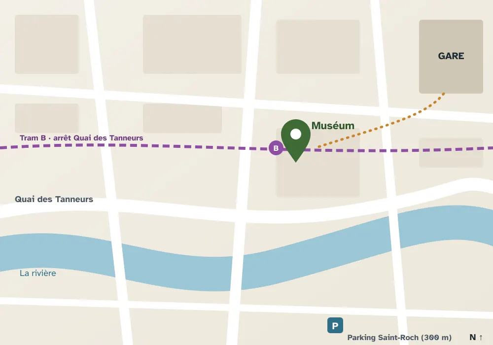

Infos pratiques
Tout ce qu'il faut savoir avant de venir.
Horaires
| Jour | Horaires |
|---|---|
| Lundi | Fermé |
| Mardi | 10 h - 18 h |
| Mercredi | 10 h - 18 h |
| Jeudi | 10 h - 18 h |
| Vendredi | 10 h - 18 h |
| Samedi | 10 h - 19 h |
| Dimanche | 10 h - 19 h |
Dernière entrée 45 minutes avant la fermeture. Fermé les 1er janvier, 1er mai et 25 décembre.
Tarifs
| Catégorie | Tarif | Conditions |
|---|---|---|
| Plein tarif | 9 € | |
| Tarif réduit | 6 € | 12-17 ans, étudiants, demandeurs d'emploi, sur justificatif |
| Moins de 12 ans | Gratuit | |
| Tarif Famille | 20 € | 2 adultes et 3 jeunes de 12 à 17 ans |
| Groupes (10 personnes et plus) | 5 € par personne | Sur réservation |
Le billet donne accès à toutes les expositions, permanentes et temporaires.
 Accès
Accès
Adresse
Muséum de Valbrune4, quai des Tanneurs
00000 Valbrune
En tram : ligne B, arrêt Quai des Tanneurs. En bus : lignes 12 et 27, arrêt Halle aux draps. À vélo : arceaux devant l'entrée principale. En voiture : parking Saint-Roch (payant) à 300 m.
Depuis la gare, comptez douze minutes à pied, vingt si vous vous arrêtez devant la vitrine du chocolatier.

Accessibilité
Le Muséum est entièrement accessible aux personnes à mobilité réduite (ascenseurs et rampes).
- Prêt de fauteuils roulants et de cannes-sièges à l'accueil.
- Boucle magnétique à l'accueil et dans l'auditorium.
- Une visite par mois en langue des signes française (LSF).
- Chiens guides et d'assistance bienvenus.